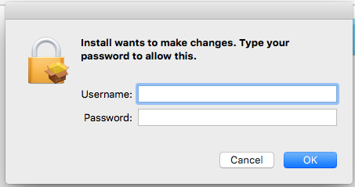
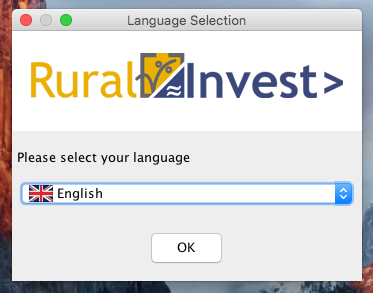

In order to install correctly please follow the instructions below.
Root/administrator privileges are necessary for installing RuralInvest.
If you do not have admin rights on your machine, please ask your administrator to run
the installer.
Note that after installation, only user-level privileges are necessary to use RuralInvest.
Install RuralInvest by double-clicking the file "Install". You will be prompted to confirm your username and password, or the username and password of the admin account.

After which, you will see the following window. It may take a minute, so please be patient.
Then, simply choose the most convenient language, click "OK", and follow the instructions.
